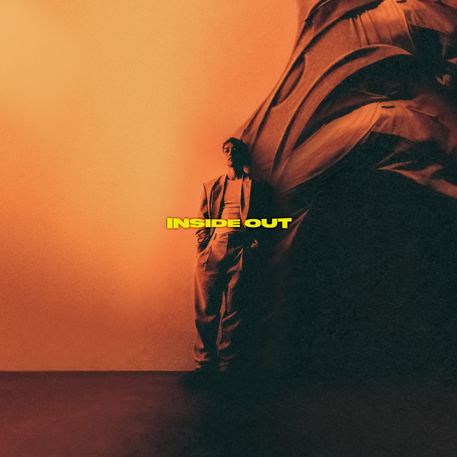

Below is a list of my personal interests.
Music/Songs
For me personally, I love K-R&B, K-Rap, and K-Pop, Artists that really inspire me and I really enjoy:
Games

Games that I enjoy in the free time include:
Mangas/Manhwas
Although I'm not quite the person to read actual books I do enjoy reading manga and manhwa, and the ones I have finished/ongoing are: